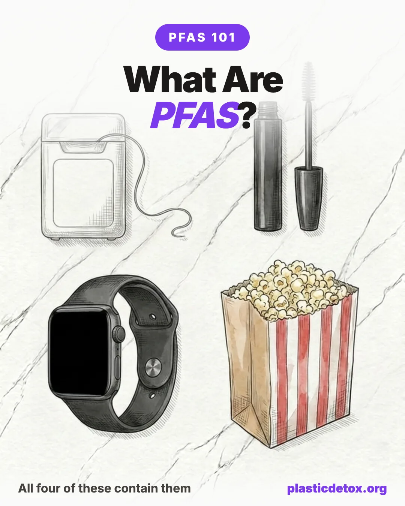

What Are PFAS? The Forever Chemicals Explained (2026)

You have almost certainly eaten, drunk, and worn PFAS today, probably without noticing. They are the invisible coating that makes a pan nonstick, a jacket waterproof, and a fry bag grease proof. They are also in your blood right now. Here is what these chemicals actually are, why they matter, and what you can realistically do about them.
The 30 Second Summary
- PFAS are a family of 14,000 plus synthetic chemicals built on the strongest bond in chemistry, which makes them slippery, waterproof, and grease proof.
- That same bond means they do not break down, so they are nicknamed forever chemicals and build up in your body over years.
- They are almost everywhere: nonstick cookware, water and stain resistant fabrics, food packaging, makeup, dental floss, and roughly half of US tap water.
- They are in nearly all of us. The CDC finds PFAS in the blood of about 97 percent of Americans, and they are linked to cancer, thyroid, immune, and pregnancy effects.
- You can cut your exposure. Filter your water, ditch nonstick, skip grease proof packaging, and choose PFAS free floss and makeup. Levels of the worst PFAS drop once you stop adding to them.
- 1. Filter your water with a reverse osmosis system
- 2. Stop heating and storing food in plastic, use glass and stainless
- 3. Swap pod and plastic coffee makers for a glass or stainless system
- 4. Ditch plastic tea bags for loose leaf and a steel infuser
- 5. Switch to a glass or stainless kettle
- 6. Stop drinking bottled water
1. What PFAS Actually Are
PFAS stands for per and polyfluoroalkyl substances, a mouthful that hides a simple idea. They are human made chemicals with a backbone of carbon atoms wrapped in fluorine. That carbon to fluorine bond is the strongest single bond in all of organic chemistry, and it is the whole story.
The same slipperiness that makes PFAS so useful in a factory makes them a problem in a body. Because sunlight, bacteria, and your own enzymes cannot snap that bond, PFAS do not rot, rinse away, or metabolize. They linger in soil and water for decades and accumulate in living things, which is why the nickname forever chemicals stuck. The family started with Teflon, discovered by accident at DuPont in 1938, and Scotchgard in the 1950s, and has since grown to more than 14,000 distinct chemicals by the EPA's count.
One quick clarification, because these three get mixed up constantly. PFAS, BPA, and phthalates all live in the "chemicals in plastic" conversation, but they are different families doing different jobs. Here is the fast way to tell them apart.
| PFAS | BPA | Phthalates | |
|---|---|---|---|
| What it does | Repels water and grease | Makes hard, clear plastic and can linings | Makes plastic soft and holds fragrance |
| Where you meet it | Nonstick pans, food packaging, waterproof fabric, makeup, tap water | Polycarbonate bottles, food can linings, receipts | Soft and flexible vinyl, fragrance, cosmetics, air fresheners |
| Main concern | Cancer, thyroid, cholesterol, immune effects | Estrogen disruptor: fertility and development | Hormone disruptor: male reproductive development |
| Stays in your body | Years. It builds into a lasting body burden | Hours to days, but you are re-exposed daily | Hours, but you are re-exposed daily |
| The catch | Not banned as a class | "BPA free" often means BPS or BPF, no safer | "Fragrance" can legally hide them |
One thing to be clear about: the fact that BPA and phthalates leave your body quickly does not make them safe. You are exposed again every single day, so levels stay topped up, and as hormone disruptors they can act at very low doses, with pregnancy and early childhood the most sensitive windows. PFAS is the one that also physically accumulates. All three are worth avoiding. We cover the other two in how to avoid BPA and phthalates and why BPA free is not actually safe.
2. Where They Hide
PFAS are not a niche industrial chemical you would only meet in a factory. They were designed into ordinary products precisely because repelling water and grease is so useful. Here is where they most commonly turn up at home.
Each of these has its own deeper story, and we cover the big ones in detail: nonstick cookware, fast food and takeout packaging, dental floss, makeup, cosmetics and personal care, drinking water, and kitchen appliances ranked by safety.
- 1Nonstick (Teflon) cookware
- 2Fast food wrappers & takeout boxes
- 3Microwave popcorn bags
- 4Waterproof jackets & rain gear
- 5Stain resistant carpets & rugs
- 6Stain treated sofas & upholstery
- 7Waterproof & long wear makeup
- 8"Glide" dental floss
- 9Grease proof paper plates & bakery bags
- 10Waterproof boots & hiking shoes
"Usually" is the key word. These categories are treated so often that you should assume PFAS unless the label clearly says PFAS free or PTFE free. The common thread is any product sold as nonstick, waterproof, water repellent, stain resistant, or grease proof.
3. How They Get Into You
PFAS reach your bloodstream through a handful of everyday doors. For most people, water and food do the heavy lifting.
The practical takeaway hides in that chart. If water and food are the biggest doors in, then a good water filter and cleaner food packaging give you the most protection per dollar. You do not have to fix everything at once to make a real dent.
4. Just How Common They Are
It is hard to overstate how thoroughly PFAS have spread. They have been found on the top of Mount Everest, in Antarctic snow, in rainwater worldwide, and in the blood of newborns. Closer to home, the numbers are just as striking.
There is real good news buried here. Since PFOA and PFOS, the two most studied PFAS, were phased out of US production, average blood levels of them have fallen by more than 70 to 85 percent. That is the clearest proof that exposure is not fixed. When you stop adding to your body burden, it starts to come down.
5. What They Do to Your Health
This is the part that matters most, and it deserves an honest framing. Scientists study PFAS mostly by comparing groups of people with higher and lower exposure, which reveals strong associations but rarely proves that one chemical caused one illness. With that caveat in mind, here is what health agencies have connected to certain PFAS.
The strongest single body of evidence comes from the C8 Science Panel, an independent group that studied roughly 69,000 people in the Ohio Valley whose water was heavily contaminated by a Teflon plant. It found a probable link between PFOA and six conditions: high cholesterol, thyroid disease, kidney cancer, testicular cancer, pregnancy induced high blood pressure, and ulcerative colitis. In 2023 the World Health Organization's cancer agency went a step further and classified PFOA as carcinogenic to humans.
6. The Rules Are Changing
For decades PFAS were essentially unregulated. That changed fast in 2024, then got more complicated in 2025. Here is the short version.
The bottom line for you: a small number of PFAS are now regulated in drinking water, and grease proof food packaging is being phased out, but the class of 14,000 chemicals as a whole is not banned. Regulation is moving, slowly and unevenly, which is exactly why reducing your own exposure is still worth doing rather than waiting for the rules to catch up.
7. How to Cut Your Exposure
You cannot avoid PFAS entirely, and you do not need to. The goal is to close the biggest doors, and they are the same ones that let the most PFAS in. Work down this list in order and you get most of the benefit from the first two moves.
Here is the whole plan in one place: our pick for every swap on the Getting Started Checklist, in priority order. Start at the top, where water and cookware close the biggest routes, and work down. We found no recalls on any of these.

Bluevua Countertop Reverse Osmosis
Countertop reverse osmosis, no plumbing needed. RO is the gold standard for reducing PFAS along with lead and microplastics, and this closes your single biggest exposure route.
View →
Urban Green Glass Containers, Glass Lids
Borosilicate glass with silicone framed glass lids, 100 percent plastic free. Store and reheat food with nothing but glass touching it, instead of leaching plastic containers.
View →
Hario V60 Ceramic Dripper
Ceramic pour over dripper, a completely inert material. Replaces plastic pod and drip machines that run hot water through plastic every morning. Buy the ceramic version, not plastic.
View →
Forlife Stainless Steel Tea Infuser
Fine mesh 18/8 stainless basket for loose leaf tea, fits most mugs and pots. Skips the plastic and PET pyramid tea bags that shed microplastics into hot water.
View →
Cosori Glass Electric Kettle
Borosilicate glass body with a stainless steel inner lid, spout, and filter. Boils water with no plastic in the path, unlike most plastic bodied electric kettles.
View →
Klean Kanteen Classic (27 oz)
Food grade 18/8 stainless steel bottle with no interior liner or plastic. Refill it from your filter so you stop buying bottled water, a heavy microplastic source.
View →
Fritaire Glass Bowl Air Fryer
Tempered glass cooking bowl with 304 stainless accessories, free of PTFE, PFOA, PFAS, and BPA in the food path, unlike the nonstick coated baskets in most air fryers.
View →
Lodge Cast Iron Skillet (12 in)
Pre seasoned cast iron with a natural nonstick patina that builds with use. Completely PFAS free and oven safe to any temperature. Replaces scratched Teflon pans for good.
View →
Teakhaus Edge Grain Teak Board
Solid teak cutting board with a built in juice groove. Naturally water resistant hardwood that does not shed microplastics into your food the way plastic boards do.
View →
Organic Cotton Sheets (Queen)
GOTS certified organic cotton bedding to replace polyester and microfiber sheets, which shed synthetic microfibers you breathe in all night. Breathable and gets softer with washing.
View →Each swap has a full guide. Go deeper on filtering PFAS from your water, choosing safe cookware, avoiding PFAS in takeout, and picking PFAS free floss.
8. Frequently Asked Questions
What are PFAS in simple terms?
PFAS are a family of more than 14,000 synthetic chemicals built around an unusually strong bond between carbon and fluorine. That bond makes things slippery, waterproof, and grease proof, which is why PFAS ended up in nonstick pans, rain jackets, food wrappers, and makeup. The same bond means they almost never break down, so they are nicknamed forever chemicals.
Why are PFAS called forever chemicals?
The carbon to fluorine bond is the strongest in organic chemistry. Sunlight, bacteria, and your body cannot easily break it, so PFAS persist for years in the environment and build up in your blood rather than clearing out. Forever is a slight exaggeration, but for practical purposes they stick around for a very long time.
Are PFAS in my blood?
Almost certainly. The CDC has detected PFAS in the blood of about 97 percent of Americans tested. The encouraging part is that levels of the two most studied types, PFOA and PFOS, have dropped sharply since they were phased out, so cutting your exposure now does lower your future body burden.
What health problems are linked to PFAS?
Health agencies link certain PFAS to higher cholesterol, kidney and testicular cancer, thyroid disease, liver changes, pregnancy complications like preeclampsia, and lower birth weight. These are associations from human studies rather than proven cause and effect, but they are consistent enough that agencies now regulate PFAS in drinking water.
How do I reduce my PFAS exposure?
Start with the biggest routes. Filter your drinking water with a reverse osmosis or PFAS certified carbon filter, swap nonstick pans for cast iron or stainless steel, skip grease proof takeout packaging and microwave popcorn bags, and choose floss, makeup, and clothing labeled PFAS free. Avoid aftermarket stain resistant treatments on carpets and furniture.
Are PFAS banned?
Not broadly. In 2024 the EPA set the first national drinking water limits for PFOA and PFOS at 4 parts per trillion, and the FDA ended the sale of PFAS grease proofing for food packaging. In 2025 the EPA kept the PFOA and PFOS water limits but pushed the deadline to 2031 and moved to roll back the limits it had proposed for several other PFAS. So a few specific PFAS are regulated, but the class as a whole is not banned.
Related Articles
- Getting Started Checklist: 10 First Swaps That Matter Most
The best next step. The highest impact swaps, in priority order. - How to Start Reducing Plastic Exposure
A practical priority guide to where to begin and what matters most. - How to Filter PFAS and Microplastics from Water
Your biggest exposure route, and the filters that actually remove it. - Cast Iron vs Stainless vs Ceramic Cookware
Nonstick is a PFAS story. The safer pans to cook on instead. - PFAS in Fast Food and Takeout Packaging
The grease proof coating on wrappers and compostable bowls. - Best PFAS Free Dental Floss
The "glide" coating on most floss is Teflon. The clean swaps.